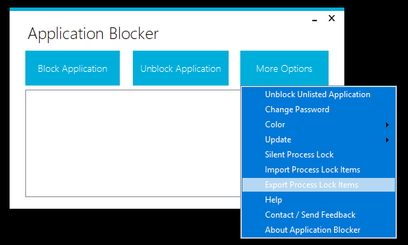

Import and Export

You can click More Options -> Import to import Process Locked applications list from a file.
You can click More Options -> Export to export Process Locked applications list to a file.
Import and export feature is currently only available for Process Locked applications.